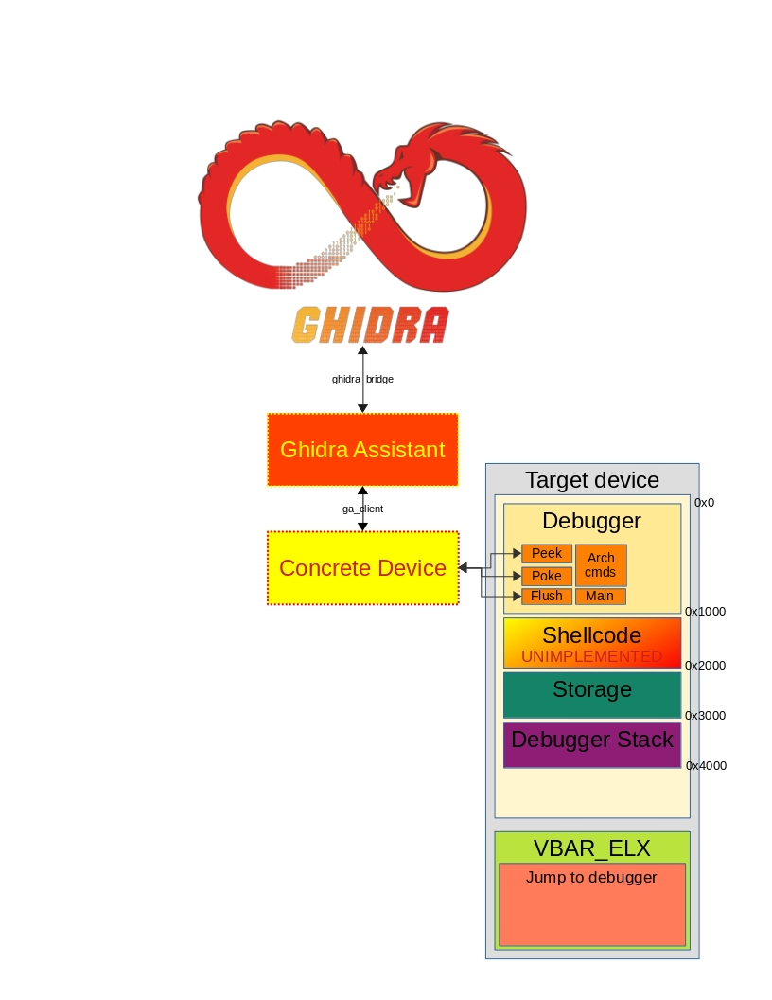
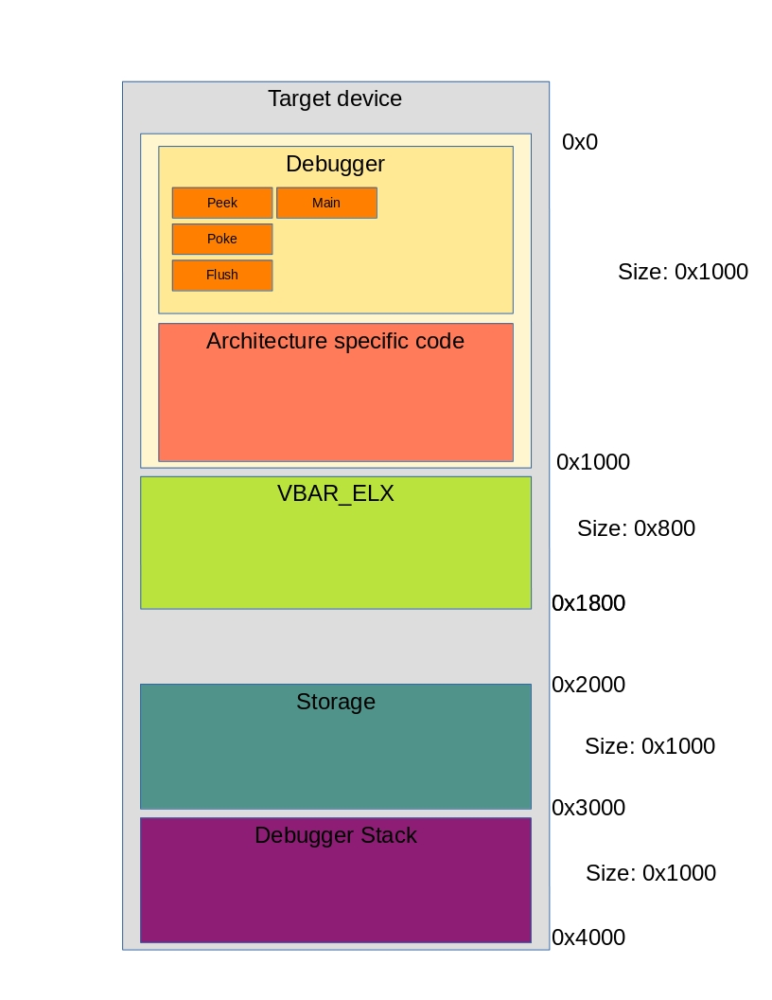

GA debugger
The GA debugger is a tool that is meant to be able to debug code on any target device but mainly devices with the architectures: THUMB, ARM, ARM64. More architectures can be added easily, but are not supported currently.
The goal is to have an universal debugger that can be easily adapted for any new target.
Debugger overview
The debugger consists out of several parts, but the main part can be described as a debugger that runs on the host, and a block of shellcode that runs on the target.

The code on the host interacts with the shellcode on the target, this first primitive that is required is any method of running our own code on the target. Currently this code needs to be run at the highest privelege level EL3 on ARM64.
Debugger Segments
The debugger is split in 3 main segments. These segments are:
Segment |
Function |
|---|---|
Debugger |
Handle Peek/Poke commands and architecture specific commands |
VBAR_ELX |
Used for implementating breakpoints. Using the debugger we can overwrite the exception handler to point to the debugger |
Storage |
Space in memory to store debugger information, like the state of the |
Shellc |
unimplmeneted Code segment that can be used to store and execute |
Stack |
Stack location for the debugger. This prevents the stack from being tainted while using the debugger. |
So the memory map for the debugger can be updated as follows:

Debugger payload
The code that needs to be running is the payload for the debugger. When this payload works the host can setup the rest of the debugger functionallity. On ARM-based devices we use the Vector Base Address Register(VBAR) for software based breakpoints. When the debugger is running on the device (r/w primitive) the debugger will be able to setup the VBAR to do debugging.
TODO & Implement
List of features that should be implemented:
(Automatic) Pagetable parsing to show which pages are mapped with what properties
Implement correct handling of the ERET command. By setting a breakpoint we want to jump back to the original code and execute the original instruction.
Sync target state with emulator. E.g copy state to emulator and continue execution there
Hardware in the Loop, in combination with the emulator
Debugger VBAR_ELX
The VBAR_ELX consists out of shellcode that is generated on the fly by the host. The reason for this is that is dependent on the architecture.
The VBAR_ELX uses the debugger for comminucation with the host. Upon entering the debugger the debugger will save all the registers to the storage location.
To do this register X15 will be corrupted. Next the Stack Pointer will be overwritten to point to the debugger stack.
This will prevent the debugger from tainting the stack.
Next the user can interact with the debugger and use the python bindings to interact with the device. To continue execution the restore_and_jump python binding can be used to restore the original registers and continue execution with a user provided address.
Note
It might be a good idea to, instead of overwriting X15 to use the tpidrro_el0 register to store the value of X15. It seems this register is usually updated in the VBAR handling and should be free to corrupt with no consequences
Debugger Commands
An overview with the commands implemented on the shellcode side of the debugger can be seen below. These commands should be implemented for each architecture, but also be device independent. For example, the REST command for restoring the stack and jumping to an address should be the same for all ARM64 devices.
Command |
Function |
|---|---|
PING |
Tests connection to the concrete device. The device should answer with b’PONG’ |
PEEK |
Command to read memory from the device. The user can supply the address and length to be dumped |
POKE |
Command to write data to memory. User needs to supply the address and length of data to be send |
SELF |
Get the absolute address of the location of the debugger_main function. |
MAIN |
Execute device specific commands. The debugger assumes this function is implemented in the concrete device (concrete_main) |
FLSH |
Architecture dependent cache flush command. This command should flush as much caches as possible |
JUMP |
Jump to a user supplied address. This does not restore the original processor state |
SPEC |
Explicitly dump processor specific registers, like |
ERET |
Exception Return. This does not explicitly restore the processor state. |
REST |
Restore stack and jump to the address written in |
SYNC |
Synchronize processor state written in |
TEST |
Dummy function to quickly test c or assembly code in the debugger |
Note
This API is still being edited and commands are still added.
Implement Debugger on new target
The main requirements for adding a new target are that we need a primitive to run code(the debugger). Currently only EL3 is supported on ARM based devices, but this can be adapted to also support EL2 and EL1.
- For the most basic setup the following functions need to be implemented:
send(*buffer, size, *num_transferd)
recv(*buffer, size, *num_transferd)
concrete_main(debugger_addr)
The main function can be just a stub because it is only executed when the MAIN command is executed. For example implementations look at the source code in utils/debugger/remote_shellcode.
Example code for the Nvidia Shield Tablet:
The code segment below implements the debugger for the Nvidia Shield tablet. The code for the exploit to run the debugger is on Eljakims Gitea
#define BOOTROM_EP1_IN_WRITE_IMM 0x001065C0
#define BOOTROM_EP1_OUT_READ_IMM 0x00106612
#define DEBUGGER_STORAGE 0x14905000
typedef void (*ep1_x_imm_t)(void *buffer, uint32_t size, uint32_t *num_xfer);
ep1_x_imm_t usb_recv = (ep1_x_imm_t) ( BOOTROM_EP1_OUT_READ_IMM | 1 );
ep1_x_imm_t usb_send = (ep1_x_imm_t) ( BOOTROM_EP1_IN_WRITE_IMM | 1 );
void send(void *buffer, uint32_t size, uint32_t *num_xfer){
usb_send(buffer, size, num_xfer);
}
int recv(void *buffer, uint32_t size, uint32_t *num_xfer){
usb_recv(buffer, size, num_xfer);
return (int)&num_xfer;
}
int mystrlen(char *data) {
int i=0;
while(1) {
if(data[i++] == '\0'){
break;
}
}
return i-1;
}
void usb_log(char * msg, uint32_t * error){
send(msg, mystrlen(msg), error);
}
void recv_data(void *data, uint32_t len) {
uint32_t rx_err_code;
uint32_t xfer = 0;
while(1) {
recv(data, len, &xfer);
if(xfer >= len) {
break;
}
}
}
void concrete_main(uint32_t debugger){
}